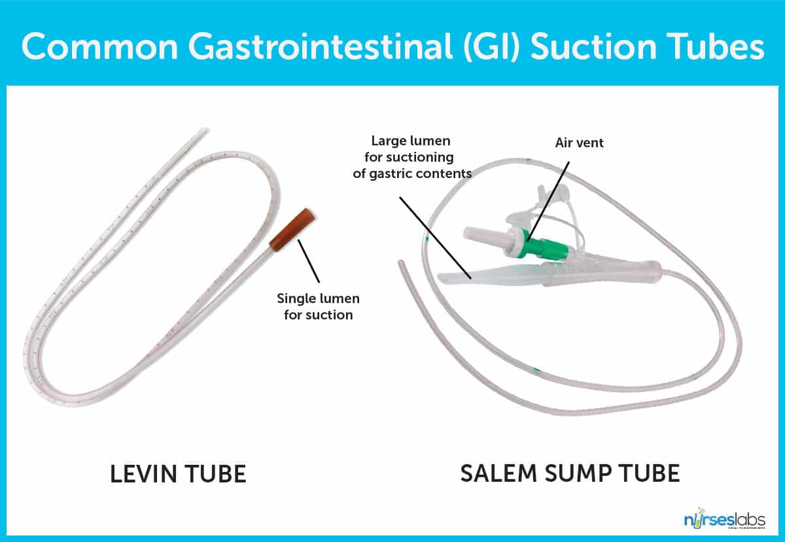
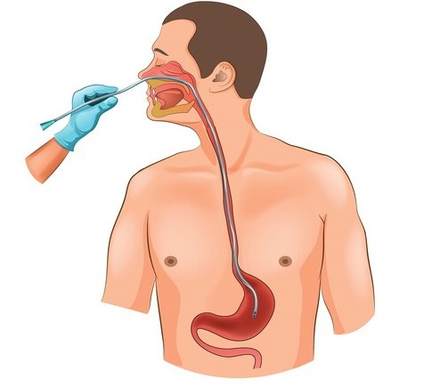
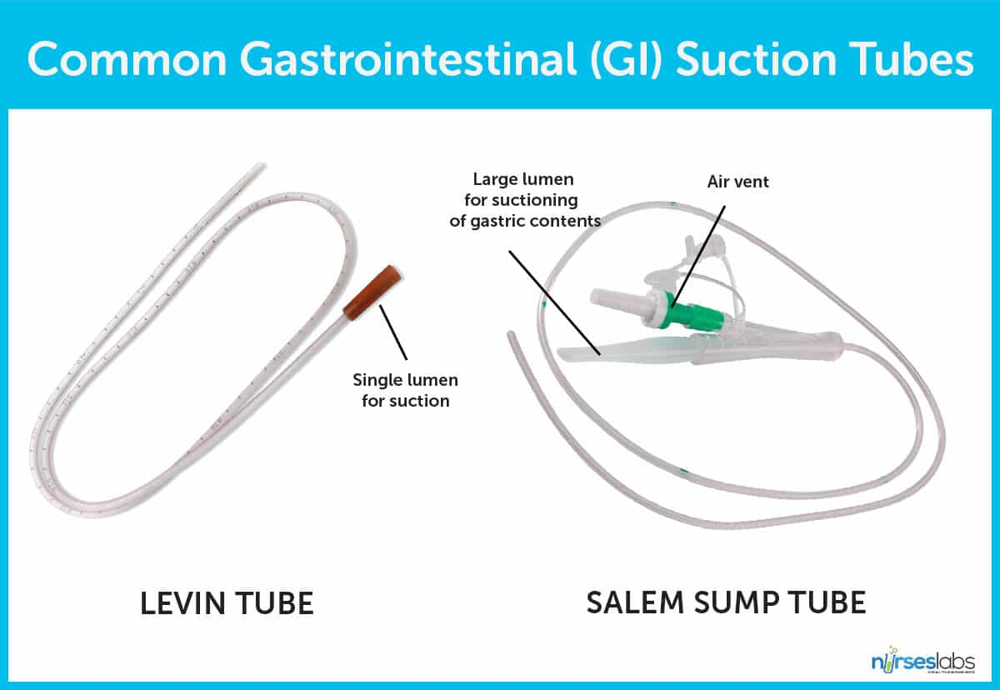
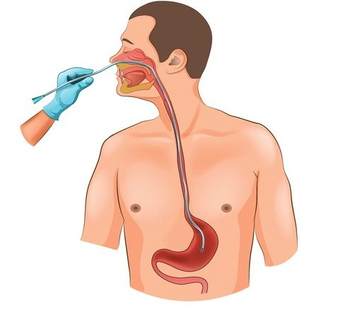
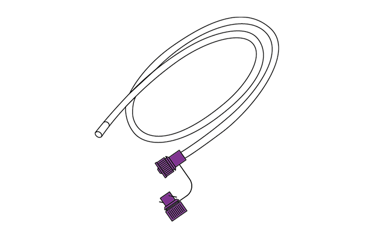

The nasogastric tube represents a cornerstone intervention in contemporary medical practice,
constitutes the intersection between therapeutic necessity and compassionate care.
A nasogastric tube (NG tube) is a thin, flexible plastic tube used for short-term medical purposes. “Nasogastric” means “nose to stomach”.
The tube's intended path is via your throat and nasal cavities, then down your esophagus and into your stomach. Different kinds of nasogastric
tubes are used by medical professionals to put drugs in your stomach or take them out.
 



When a person is unable to tolerate solid foods by mouth, an NG tube might be used to give nutrients via liquid nutrition. It can also be used to give medications in some situations. A Nasogastruc tube can be used by adults or children. In children, NG tube feeding may be necessary because of swallowing difficulties, digestive issues, inflammation, or other medical conditions. This can prevent a child from getting proper nutrition from food, breast milk, or formula.
The most common reasons for using an Nasogastric tube include:
The single-lumen NG tube has a single, narrow channel for delivering medications and nutrition one way into your stomach.
The channel has a small diameter (“small bore”) to make it as comfortable as possible, since it may be in place for up to several weeks.
The Levin and the Dobhoff are the two main models in use. The main difference between them is that the Dobhoff tube has a weight on the end.

The double-lumen NG tube is specially designed for suctioning, but it can also be used for other purposes.
It has two channels: a wider one to suction through and a narrower one that acts as an air vent to relieve the vacuum pressure.
This helps prevent the tube from adhering to your stomach lining while suctioning. There are several models, but the Salem Sump™
may be the most common one.